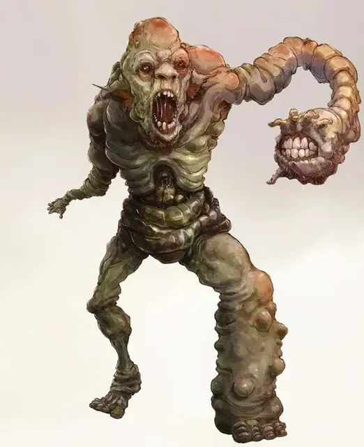

Руттеркин
Rutterkin
Среднее Исчадие (Демон), хаотично-злое

Класс Доспеха 12
Хиты 37 (5к8 + 15)
Скорость 20 футов
| мод | спас | ||
|---|---|---|---|
| СИЛ | 14 | +2 | +2 |
| ЛОВ | 15 | +2 | +2 |
| ТЕЛ | 17 | +3 | +3 |
| мод | спас | ||
|---|---|---|---|
| ИНТ | 5 | −3 | −3 |
| МДР | 12 | +1 | +1 |
| ХАР | 6 | −2 | −2 |
Сопротивление урону огонь, холод, электричество
Иммунитет к урону яд
Иммунитет к состояниям отравление, очарование, испуг
Чувства тёмное зрение 120 футов, пассивное Восприятие 11
Языки Бездны
Опасность 2 (450 опыта)
Бонус мастерства +2
Особенности
Языки. Понимает язык Бездны, но не говорит.
Искажённый ужас. Если существо, отличное от демона, начинает ход в пределах 30 фт. от трёх или более руттеркинов, оно должно пройти спасбросок Мудрости Сл 11. Если существо находится в пределах 30 фт. от шести и более руттеркинов, то этот спасбросок совершается с помехой. В случае успеха существо становится невосприимчивым к этому навыку руттеркинов на следующие 24 часа. В случае провала существо становится Испуганным руттеркинами на 1 минуту. Испуганное таким образом существо становится Опутанным. В конце каждого своего хода Испуганное существо может повторять спасбросок, завершая эффект в случае успеха.
Действия
Укус. Рукопашная атака оружием: +4 к попаданию, досягаемость 5 фт., одна цель. Попадание: 12 (3к6 + 2) колющего урона. Если цель – существо, то оно должно преуспеть в спасброске Телосложения Сл 13 от болезни, иначе станет отравленной. В конце каждого продолжительного отдыха оно может повторять спасбросок, заканчивая эффект Отравления в случае успеха. Если хиты цели опускаются до 0, пока она находится под действием болезни, она умирает и немедленно превращается в живую Тварь Бездны. Такое изменение тела может быть отменено лишь заклинанием исполнение желаний.
Описание
Руттеркины - вид искаженных демонов, которые бродят по Бездне толпами и постоянно ищут злоумышленников, чтобы окружить их и поглотить.
Защитники из Бездны. Руттеркины защищают Бездну от не демонических существ. Заметив нарушителя, они собираются толпой и движутся вперёд к цели, образуя устрашающую волну, которая вселяет своим жертвам страх, отчего те застывают на месте.
Деформирующее заражение. Существа, укушенные руттеркинами, подвергаются ужасной болезни, что заражает их развращающим воздействием Бездны. Существа, которые поддались такой болезни, испытывают невероятную боль в своих телах и становятся обезображенными ходячими трупами, чья плоть свисает с костей, в скором времени, они становятся тварями Бездны [Abyssal wretch], чудовищами, что следуют по пятам руттеркинов.